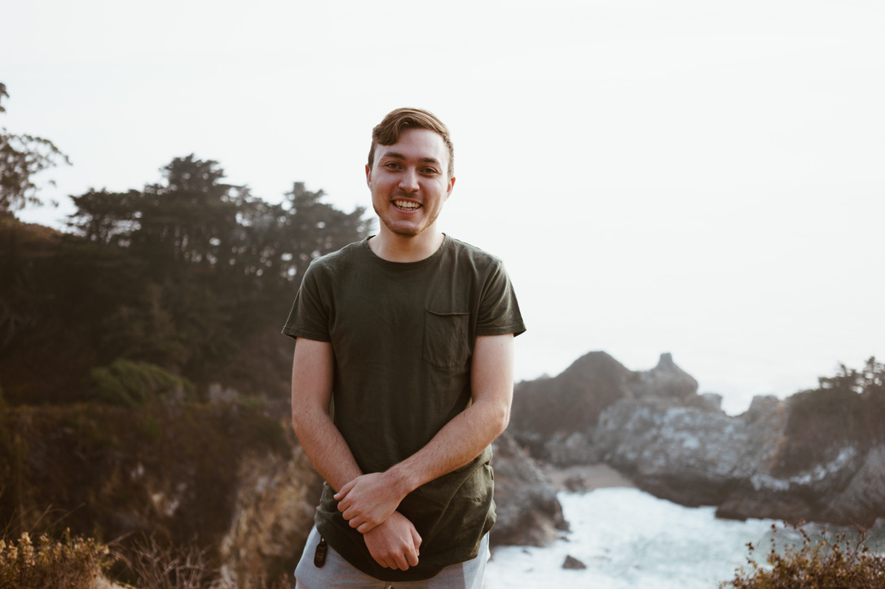

Hey there, I'm Mark
I started working in UX design over 1 year ago. I graduated in 2018 with a degree in Hospitality Managment and soon found out that I was not interested in serving people in that capacity. I wanted to help people in a different way. In 2019 I started working as a contractor at a tech company in events, I was exposed to many different teams and that is where I learned about UX design.
I enrolled in the Google and Coursera UX design certification program last year to learn about UX desing. I found that I needed more school and am currently persuing an AA to build experience and enroll in a masters program soon. Welcome to my portfolio website!